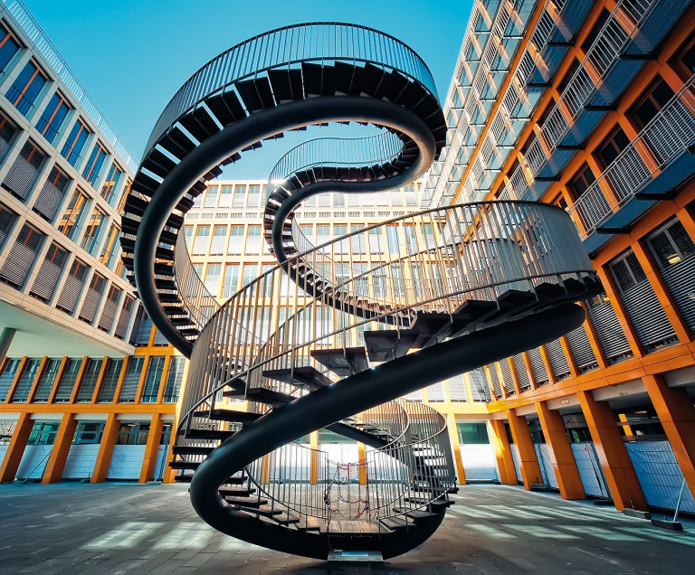

Выполнила: Гурбанович Вероника Андреевна
Группа: 1ПИб-02-3оп-23
ЧГУ ИИТ МПО ЭВМ
2024 г.

Гурбанович Вероника
Лестница Пенроуза (бесконечная лестница, невозможная лестница) — это одна из основных невозможных фигур, открытая Оскаром Рутерсвардом. Модель её была разработана британским психиатром Лайонелом Пенроузом и его сыном, математиком Роджером Пенроузом (впоследствии лауреатом Нобелевской премии по физике 2020 года).
Модель бесконечной лестницы впервые была опубликована Лайонелом и Роджером Пенроузами в журнале British Journal of Psychology в 1958 году. После публикации в 1960 году литографии «Восхождение и нисхождение» художника Маурица Эшера эта невозможная фигура стала одной из самых популярных. Впоследствии лестница Пенроуза часто встречалась в книгах, играх, головоломках, учебниках психологии.
Представляет собой такую конструкцию лестницы, при которой в случае движения по ней в одном направлении (на рисунке к статье против часовой стрелки) человек будет бесконечно подниматься, а при движении в обратном — постоянно спускаться. При этом после завершения визуального маршрута человек окажется в той же точке, с которой начал своё передвижение. Лестница сконструирована таким образом, что существование её в реальном мире невозможно.
Идею вечной лестницы использовал нидерландский художник-график Мауриц Корнелис Эшер в своей известной картине «Восхождение и нисхождение», созданной в 1960 году. По лестнице, вписанной в крышу монастыря, непрерывно движутся монахи в капюшонах. Они идут навстречу друг другу то по часовой стрелке, то против нее, так и не достигая ни верха, ни низа.
Идея фигуры вдохновила дизайнера Олафа Элиассона на создание бесконечной лестницы во дворе международной аудиторской компании KPMG в Мюнхене. Спиралевидную фигуру назвали «Перезапись». По ней реально можно ходить, причем бесконечно. Своим творением автор хотел передать идею о том, что можно вечно подниматься по неким ступеням, но так никуда и не прийти.
Выполнила: Гурбанович Вероника Андреевна
Группа: 1ПИб-02-3оп-23
ЧГУ ИИТ МПО ЭВМ
2024 г.
Гурбанович Вероника